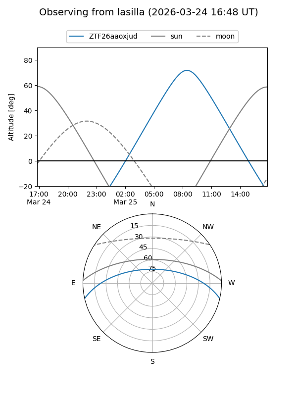
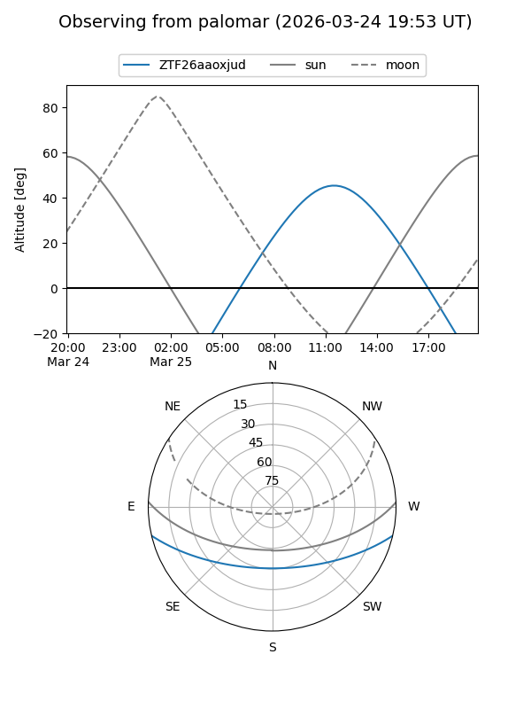

ZTF26aaoxjud
Target ZTF26aaoxjud at 2026-03-25 12:16
Aliases and brokers:
FINK: link
Lasair: link
ALeRCE: link
alt names
ZTF26aaoxjud (ztf,fink_ztf)
Coordinates:
equatorial (ra, dec) = 238.2639,-11.11289
equatorial (HMS+DMS) = 15:53:03.34,-11:06:46.41
galactic (l, b) = (358.1290,+31.68539)
Flags:
Photometry:
last ztfg=15.91, ztfr=15.10
1 ztfg, 1 ztfr detections
Lightcurve
Visibility


Additional plots